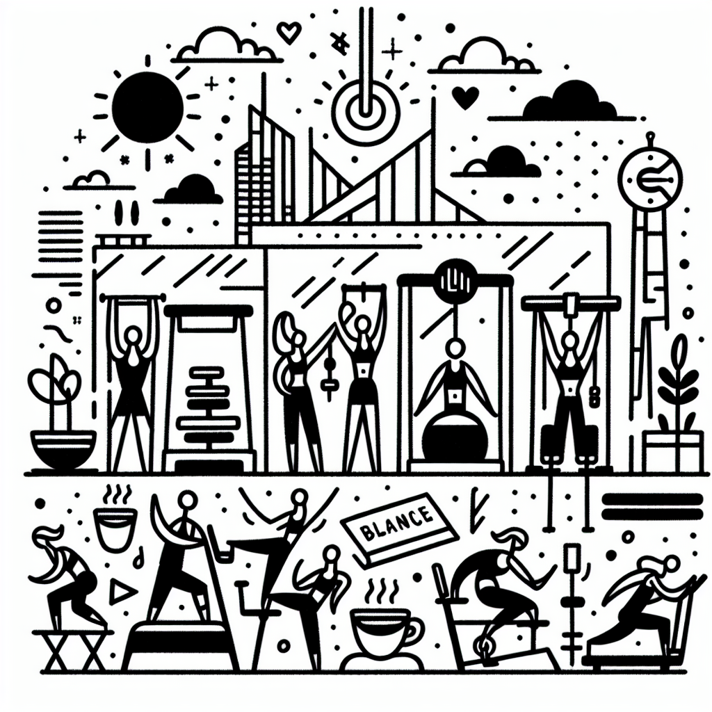

Mal de dos et Lagree : la solution miracle ?
Mal de dos et Lagree : la solution miracle ?
Vivre avec un mal de dos peut transformer notre quotidien en un parcours semé d'embûches. Les gestes simples prennent une couleur nouvelle, souvent douloureuse, et la quête d'un remède adéquat devient vite une priorité. C'est là qu'intervient le Lagree Fitness, une méthode de renforcement musculaire innovante qui pourrait bien être la solution que vous attendiez. Aujourd'hui, nous vous invitons à découvrir comment le Lagree, proposé dans le cadre unique du Studio DOZ à Anglet, peut vous aider à retrouver un dos solide et résilient.
Lagre: comprendre la méthode innovative
Le Lagree Fitness n'est pas juste une tendance de plus dans le monde du sport. C'est une méthode qui repose sur le renforcement musculaire à haute intensité, mais sans impact. Cet aspect est d'ailleurs fondamental pour ceux qui souffrent du dos et recherchent des solutions efficaces sans aggraver leur condition. Grâce à ses machines MegaPro, le Lagree permet de renforcer chaque muscle sans le traumatiser. Le Studio DOZ, premier du genre au Pays Basque, vous offre l'opportunité d'expérimenter cette méthode dans un cadre moderne où le design minimaliste et lumineux vous invite à donner le meilleur de vous-même.
Le rôle crucial de la musculature dorsale
Le dos est le pilier de notre corps, souvent négligé jusqu'à ce que la douleur nous rappelle son importance. Des muscles forts et équilibrés sont essentiels pour:
- Soutenir la colonne vertébrale
- Améliorer la posture
- Minimiser le risque de blessures
- Aider à la réhabilitation post-blessure
- Aider au maintien de la mobilité et de la flexibilité
Au Studio DOZ, chaque session de Lagree est une invitation à renforcer précisément ces muscles critiques, dans un environnement sécurisé et adapté à vos besoins spécifiques.
Des sessions sur-mesure pour le dos
À DOZ, vos besoins personnels ne passent pas inaperçus. La magie réside dans cette capacité à adapter les séances à chaque profil, surtout lorsque l’on est face à des maux tels que le mal de dos. Les machines MegaPro, alliées à l'expertise des coachs, permettent des ajustements précis en intensité et amplitude afin de cibler efficacement les muscles dorsaux tout en les préservant.
Un mode de vie sain pour accompagner le Lagree
Faire du Lagree, c'est déjà un pas vers une meilleure santé. Mais pourquoi s'arrêter là ? Notre Coffee Shop à DOZ complète l'expérience en vous offrant une alimentation saine, locale et de saison. Croyez-le ou non, une bonne alimentation joue un rôle clé dans la lutte contre le mal de dos. Voici quelques conseils pour conjuguer vos efforts sportifs avec une nutrition adaptée :
- Adoptez une alimentation anti-inflammatoire riche en oméga-3.
- Privilégiez les aliments qui favorisent la santé osseuse, tels que le calcium et la vitamine D.
- Hydratez-vous régulièrement, car une bonne hydratation est essentielle pour les disques intervertébraux.
- Pensez à une consommation modérée de café de spécialité pour ses antioxydants tout en appréciant son goût unique.
Embrasser la philosophie 'Instant Brut'
À DOZ, chaque moment passé dans notre studio et coffee shop est une opportunité pour s'imprégner d'une philosophie introspective : l''Instant Brut'. Au-delà de la pratique physique, cette approche vous inspire à vous recentrer sur l'essentiel : la qualité, l'effort, et le réconfort. Ici, béton, bois et métal s'allient pour vous offrir un espace propice à la détente et à la revitalisation.
Conclusion : place à l'action!
Ne laissez pas le mal de dos éclipser votre quotidien. Rejoignez-nous au Studio DOZ pour découvrir comment le Lagree peut transformer votre vie. Chaque cours est une étape vers la liberté, un dos sans douleur et un esprit apaisé. Réservez dès maintenant votre session Lagree ou laissez-vous tenter par notre coffee shop pour une pause bien-être incontournable. Venez vivre l'expérience DOZ, où l'effort se mêle au réconfort sur une côte aussi vibrante que bienveillante.